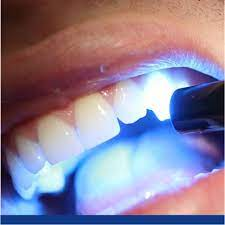
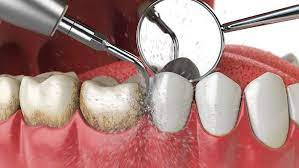
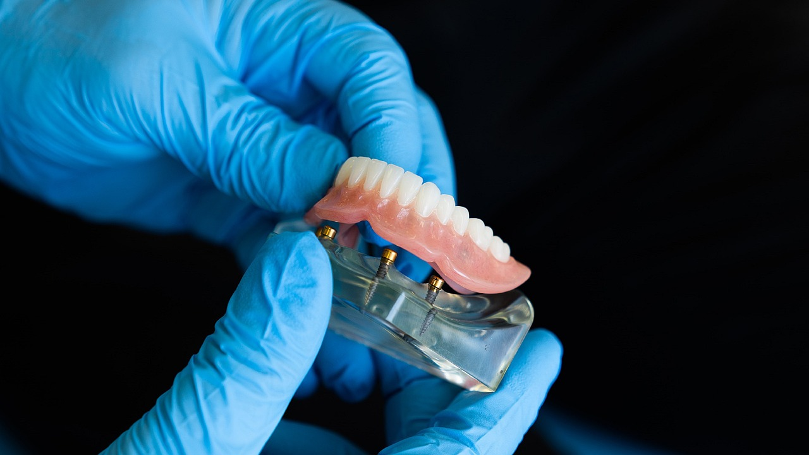

Nossas especialidades

Resinas dentais R$1,000.00
Não é necessário tempo de recuperação
As resinas dentárias são compostos utilizados para reparar dentes ou para melhorar a estética. Eles são uma mistura de plástico e vidro.
Algumas recomendações:
- Evite alimentos duros
- Evite bebidas quentes
- Mantenha uma boa higiene bucal
Limpeza dental R$500.00
Não é necessário tempo de recuperação
As limpezas dentárias são procedimentos odontológicos nos quais são removidos a placa bacteriana, o tártaro nos dentes e gengivas, etc. O principal objetivo é prevenir doenças.
Algumas recomendações:
- Escove os dentes com frequência
- Use fio dental diariamente
- Evite alimentos açucarados


Próteses dentarias R$3,000.00
Não é necessário tempo de recuperação
As próteses dentárias são dispositivos dentários concebidos para substituir um ou mais dentes perdidos, podendo ser fixas ou removíveis.
Algumas recomendações:
- Escove os dentes diariamente
- Limpiar las prótesisi frecuentemente
- Evitar alimentos duros o pegajosos